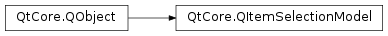

QItemSelectionModel¶
Synopsis¶
Functions¶
- def
columnIntersectsSelection(column, parent) - def
currentIndex() - def
emitSelectionChanged(newSelection, oldSelection) - def
hasSelection() - def
isColumnSelected(column, parent) - def
isRowSelected(row, parent) - def
isSelected(index) - def
model() - def
rowIntersectsSelection(row, parent) - def
selectedColumns([row=0]) - def
selectedIndexes() - def
selectedRows([column=0]) - def
selection() - def
setModel(model)
Virtual functions¶
- def
clear() - def
clearCurrentIndex() - def
reset() - def
select(index, command) - def
select(selection, command) - def
setCurrentIndex(index, command)
Slots¶
- def
clearSelection()
Signals¶
- def
currentChanged(current, previous) - def
currentColumnChanged(current, previous) - def
currentRowChanged(current, previous) - def
modelChanged(model) - def
selectionChanged(selected, deselected)
Detailed Description¶
The
PySide2.QtCore.QItemSelectionModelclass keeps track of a view’s selected items.A
PySide2.QtCore.QItemSelectionModelkeeps track of the selected items in a view, or in several views onto the same model. It also keeps track of the currently selected item in a view.The
PySide2.QtCore.QItemSelectionModelclass is one of the Model/View Classes and is part of Qt’s model/view framework .The selected items are stored using ranges. Whenever you want to modify the selected items use
PySide2.QtCore.QItemSelectionModel.select()and provide either aPySide2.QtCore.QItemSelection, or aPySide2.QtCore.QModelIndexand aQItemSelectionModel.SelectionFlag.The
PySide2.QtCore.QItemSelectionModeltakes a two layer approach to selection management, dealing with both selected items that have been committed and items that are part of the current selection. The current selected items are part of the current interactive selection (for example with rubber-band selection or keyboard-shift selections).To update the currently selected items, use the bitwise OR of
QItemSelectionModel.Currentand any of the otherSelectionFlags. If you omit theQItemSelectionModel.Currentcommand, a new current selection will be created, and the previous one added to the whole selection. All functions operate on both layers; for example,selecteditems()will return items from both layers.Note
Since 5.5,
PySide2.QtCore.QItemSelectionModel.model(),PySide2.QtCore.QItemSelectionModel.hasSelection(), andPySide2.QtCore.QItemSelectionModel.currentIndex()are meta-object properties.
-
class
PySide2.QtCore.QItemSelectionModel([model=nullptr])¶ -
class
PySide2.QtCore.QItemSelectionModel(model, parent) Parameters: - model –
PySide2.QtCore.QAbstractItemModel - parent –
PySide2.QtCore.QObject
Constructs a selection model that operates on the specified item
model.Constructs a selection model that operates on the specified item
modelwithparent.- model –
-
PySide2.QtCore.QItemSelectionModel.SelectionFlag¶ This enum describes the way the selection model will be updated.
Constant Description QItemSelectionModel.NoUpdate No selection will be made. QItemSelectionModel.Clear The complete selection will be cleared. QItemSelectionModel.Select All specified indexes will be selected. QItemSelectionModel.Deselect All specified indexes will be deselected. QItemSelectionModel.Toggle All specified indexes will be selected or deselected depending on their current state. QItemSelectionModel.Current The current selection will be updated. QItemSelectionModel.Rows All indexes will be expanded to span rows. QItemSelectionModel.Columns All indexes will be expanded to span columns. QItemSelectionModel.SelectCurrent A combination of Select and Current, provided for convenience. QItemSelectionModel.ToggleCurrent A combination of Toggle and Current, provided for convenience. QItemSelectionModel.ClearAndSelect A combination of Clear and Select, provided for convenience.
-
PySide2.QtCore.QItemSelectionModel.clear()¶ Clears the selection model. Emits
PySide2.QtCore.QItemSelectionModel.selectionChanged()andPySide2.QtCore.QItemSelectionModel.currentChanged().
-
PySide2.QtCore.QItemSelectionModel.clearCurrentIndex()¶ Clears the current index. Emits
PySide2.QtCore.QItemSelectionModel.currentChanged().
-
PySide2.QtCore.QItemSelectionModel.clearSelection()¶ Clears the selection in the selection model. Emits
PySide2.QtCore.QItemSelectionModel.selectionChanged().
-
PySide2.QtCore.QItemSelectionModel.columnIntersectsSelection(column, parent)¶ Parameters: - column –
PySide2.QtCore.int - parent –
PySide2.QtCore.QModelIndex
Return type: PySide2.QtCore.boolReturns
trueif there are any items selected in thecolumnwith the givenparent.- column –
-
PySide2.QtCore.QItemSelectionModel.currentChanged(current, previous)¶ Parameters: - current –
PySide2.QtCore.QModelIndex - previous –
PySide2.QtCore.QModelIndex
- current –
-
PySide2.QtCore.QItemSelectionModel.currentColumnChanged(current, previous)¶ Parameters: - current –
PySide2.QtCore.QModelIndex - previous –
PySide2.QtCore.QModelIndex
- current –
-
PySide2.QtCore.QItemSelectionModel.currentIndex()¶ Return type: PySide2.QtCore.QModelIndexReturns the model item index for the current item, or an invalid index if there is no current item.
-
PySide2.QtCore.QItemSelectionModel.currentRowChanged(current, previous)¶ Parameters: - current –
PySide2.QtCore.QModelIndex - previous –
PySide2.QtCore.QModelIndex
- current –
-
PySide2.QtCore.QItemSelectionModel.emitSelectionChanged(newSelection, oldSelection)¶ Parameters: - newSelection –
PySide2.QtCore.QItemSelection - oldSelection –
PySide2.QtCore.QItemSelection
Compares the two selections
newSelectionandoldSelectionand emitsPySide2.QtCore.QItemSelectionModel.selectionChanged()with the deselected and selected items.- newSelection –
-
PySide2.QtCore.QItemSelectionModel.hasSelection()¶ Return type: PySide2.QtCore.boolReturns
trueif the selection model contains any selection ranges; otherwise returnsfalse.
-
PySide2.QtCore.QItemSelectionModel.isColumnSelected(column, parent)¶ Parameters: - column –
PySide2.QtCore.int - parent –
PySide2.QtCore.QModelIndex
Return type: PySide2.QtCore.boolReturns
trueif all items are selected in thecolumnwith the givenparent.Note that this function is usually faster than calling
PySide2.QtCore.QItemSelectionModel.isSelected()on all items in the same column and that unselectable items are ignored.- column –
-
PySide2.QtCore.QItemSelectionModel.isRowSelected(row, parent)¶ Parameters: - row –
PySide2.QtCore.int - parent –
PySide2.QtCore.QModelIndex
Return type: PySide2.QtCore.boolReturns
trueif all items are selected in therowwith the givenparent.Note that this function is usually faster than calling
PySide2.QtCore.QItemSelectionModel.isSelected()on all items in the same row and that unselectable items are ignored.- row –
-
PySide2.QtCore.QItemSelectionModel.isSelected(index)¶ Parameters: index – PySide2.QtCore.QModelIndexReturn type: PySide2.QtCore.boolReturns
trueif the given model itemindexis selected.
-
PySide2.QtCore.QItemSelectionModel.model()¶ Return type: PySide2.QtCore.QAbstractItemModelReturns the item model operated on by the selection model.
-
PySide2.QtCore.QItemSelectionModel.modelChanged(model)¶ Parameters: model – PySide2.QtCore.QAbstractItemModel
-
PySide2.QtCore.QItemSelectionModel.reset()¶ Clears the selection model. Does not emit any signals.
-
PySide2.QtCore.QItemSelectionModel.rowIntersectsSelection(row, parent)¶ Parameters: - row –
PySide2.QtCore.int - parent –
PySide2.QtCore.QModelIndex
Return type: PySide2.QtCore.boolReturns
trueif there are any items selected in therowwith the givenparent.- row –
-
PySide2.QtCore.QItemSelectionModel.select(index, command)¶ Parameters: - index –
PySide2.QtCore.QModelIndex - command –
PySide2.QtCore.QItemSelectionModel.SelectionFlags
Selects the model item
indexusing the specifiedcommand, and emitsPySide2.QtCore.QItemSelectionModel.selectionChanged().See also
QItemSelectionModel.SelectionFlags- index –
-
PySide2.QtCore.QItemSelectionModel.select(selection, command) Parameters: - selection –
PySide2.QtCore.QItemSelection - command –
PySide2.QtCore.QItemSelectionModel.SelectionFlags
Selects the item
selectionusing the specifiedcommand, and emitsPySide2.QtCore.QItemSelectionModel.selectionChanged().See also
QItemSelectionModel.SelectionFlag- selection –
-
PySide2.QtCore.QItemSelectionModel.selectedColumns([row=0])¶ Parameters: row – PySide2.QtCore.intReturn type: PySide2.QtCore.QModelIndexListReturns the indexes in the given
rowfor columns where all rows are selected.
-
PySide2.QtCore.QItemSelectionModel.selectedIndexes()¶ Return type: PySide2.QtCore.QModelIndexListReturns a list of all selected model item indexes. The list contains no duplicates, and is not sorted.
-
PySide2.QtCore.QItemSelectionModel.selectedRows([column=0])¶ Parameters: column – PySide2.QtCore.intReturn type: PySide2.QtCore.QModelIndexListReturns the indexes in the given
columnfor the rows where all columns are selected.
-
PySide2.QtCore.QItemSelectionModel.selection()¶ Return type: PySide2.QtCore.QItemSelectionReturns the selection ranges stored in the selection model.
-
PySide2.QtCore.QItemSelectionModel.selectionChanged(selected, deselected)¶ Parameters: - selected –
PySide2.QtCore.QItemSelection - deselected –
PySide2.QtCore.QItemSelection
- selected –
-
PySide2.QtCore.QItemSelectionModel.setCurrentIndex(index, command)¶ Parameters: - index –
PySide2.QtCore.QModelIndex - command –
PySide2.QtCore.QItemSelectionModel.SelectionFlags
Sets the model item
indexto be the current item, and emitsPySide2.QtCore.QItemSelectionModel.currentChanged(). The current item is used for keyboard navigation and focus indication; it is independent of any selected items, although a selected item can also be the current item.Depending on the specified
command, theindexcan also become part of the current selection.- index –
-
PySide2.QtCore.QItemSelectionModel.setModel(model)¶ Parameters: model – PySide2.QtCore.QAbstractItemModelSets the model to
model. ThePySide2.QtCore.QItemSelectionModel.modelChanged()signal will be emitted.
© 2018 The Qt Company Ltd. Documentation contributions included herein are the copyrights of their respective owners. The documentation provided herein is licensed under the terms of the GNU Free Documentation License version 1.3 as published by the Free Software Foundation. Qt and respective logos are trademarks of The Qt Company Ltd. in Finland and/or other countries worldwide. All other trademarks are property of their respective owners.